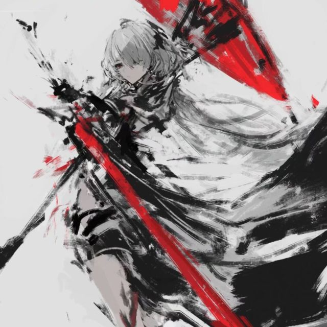

Stage placeholder / 主视区占位
Waiting 00STAGEPlaceholder
主视区占位：将承载当前实例 3D 展示、版本主视觉或官方新闻轮播。
待接入：实例数据源 · 模型 / 壁纸资源 · 新闻 API。
Game list
实例列表
列表来自所有已添加的游戏文件夹。双击实例进入管理页；单击选中后用右下角「启动游戏」启动，右键（或行尾 ⋯）还有测试启动、生成启动脚本、更换图标等操作。
Game folder
游戏目录管理
启动器会扫描这里列出的每个游戏文件夹。路径可以填绝对路径，也可以勾选相对路径让配置跟着启动器走。
Instance
实例
—
原版与 Forge / NeoForge / Fabric / Quilt 由内置 mcdl 自动安装：先确保原版就位，再生成一个独立的加载器实例。OptiFine 需要手动下载安装器，LiteLoader 已停止更新（仅 1.12.2），两者仍保持禁用。
改动会直接写入 level.dat，覆盖前会保留一份 level.dat_old。
备份是保存到启动器数据目录的 zip，恢复时会解压成「世界名 (恢复 时间)」，不覆盖原世界。
数据包放在世界目录的 datapacks 下；启用 / 禁用由 level.dat 的 DataPacks 列表控制，本页只做导入与删除。
New instance
新建实例
从实时版本列表选择游戏版本，可选原版或 Forge / NeoForge / Fabric / Quilt，mcdl 会自动装好原版与加载器。
Account
账户
离线账号只用本地玩家名，无需联网；微软账号通过官方接口登录，令牌只保存在本机。启动游戏使用当前选中的账号。
Download centre
下载中心
版本与加载器由内置 mcdl 安装到默认游戏目录；整合包支持本地 .zip / .mrpack，模组 / 资源包 / 光影 走 Modrinth。世界暂无在线源。
进入下载中心时读取版本列表…
选择或拖入 .zip / .mrpack 后这里显示包内条目、mod 数量与解压后的实例名。
等待选择整合包
安装到：—
留空搜索可浏览热门模组
安装到：—
留空搜索可浏览热门资源包
安装到：—
留空搜索可浏览热门光影
Settings
设置
全局游戏参数、Java、下载源与通用选项；单实例的覆盖在实例详情里改。
「安装 Java」会从 Eclipse Adoptium 下载官方 Temurin JDK 到启动器数据目录（约 180 MB），装好后自动登记并选中；不需要管理员权限，也不改系统 PATH。已有运行时可以直接在上面选。
目前只提供简体中文；语言切换需要补齐各页面的文案表。
选一个 NBT 文件（世界存档的 level.dat、结构文件等），
以「路径 / 类型 / 值」的表格展开；只有标量字段可以改，写回前会自动备份成
文件.bak，未知字段原样保留。
还没有上传壁纸。图片会复制进数据目录，视频只记录路径、不复制。
壁纸全部来自本机，不联网、不上传。视频用双视频解码（内外各一），1080p 约多占 60–120 MB 显存；软件渲染下会自动降为静态首帧。
版本列表源与下载源会作为 `--source` 传给 mcdl；附加内容下载源目前只有 Modrinth 可用。
MCDL Launcher
正在读取版本信息…
未配置更新源
-

总多离别 项目作者 · 界面与启动器实现 -
 DeepSeek
协作开发 · 代码与文档
DeepSeek
协作开发 · 代码与文档
MCDL Launcher 使用 Electron 重写界面，内置 MIT 许可的 mcdl 下载器；界面控件清单来自早期 HMCL 定制分支。